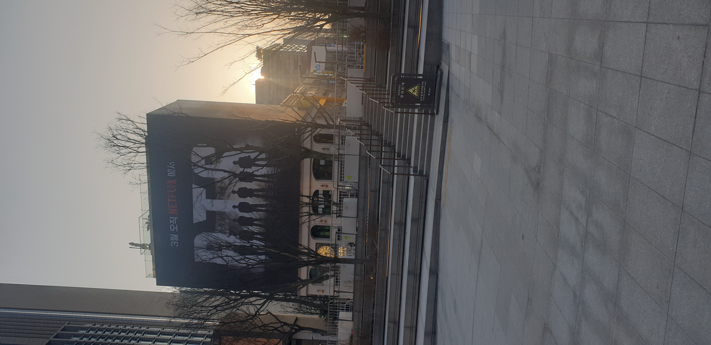
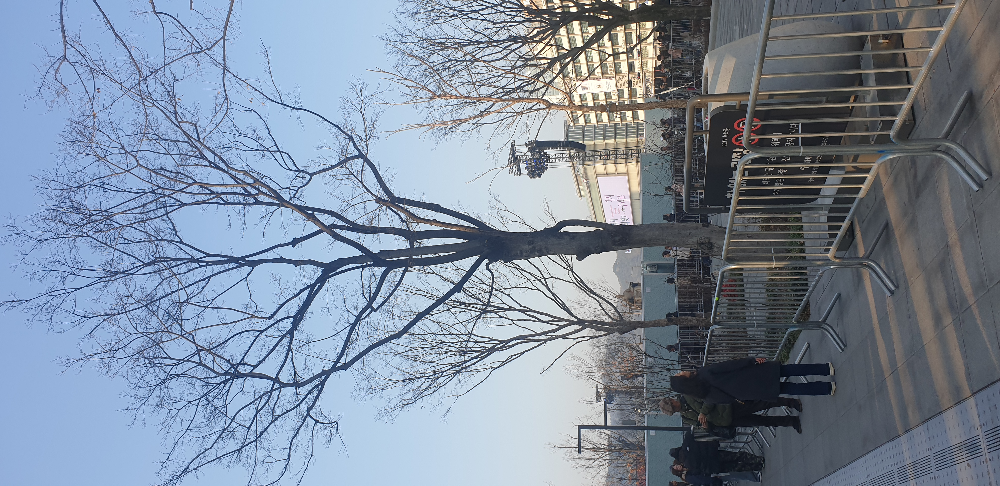

Narration Script
옅은 노을빛이 도심의 빌딩 사이로 스며들며 차가운 공기가 머무는 광장. 텅 빈 듯한 이 공간 위로 거대한 존재감이 시선을 압도합니다. 잎을 다 떨군 앙상한 겨울 나무들 너머로 우뚝 솟은 건물의 외벽, 그곳에는 짙은 어둠을 배경으로 'BTS'라는 거대한 철자와 함께 일곱 멤버의 실루엣이 새겨져 있습니다. '3월 오직 NETFLIX에서'. 단호한 붉은색 글씨가 다가올 거대한 이벤트를 예고하듯 조용히 빛을 발하며 광장의 정적인 분위기와 대비를 이룬다.
넓게 펼쳐진 화강암 계단과 광장 주변은 아직 대중의 발길이 닿지 않아 차분한 정적을 유지하고 있습니다. 하지만 그 이면에는 행사를 앞둔 팽팽한 긴장감과 분주함이 흐릅니다.
시선을 광장 안쪽으로 돌리면, 앙상한 가지를 뻗은 거대한 나무들 아래로 길게 늘어선 은빛 철제 바리케이드가 끝없이 이어져 있습니다. 촘촘하게 세워진 통제선 주변으로는 두꺼운 외투를 챙겨 입은 경호 인력과 스태프들이 드문드문 자리한 채 현장을 주시하고 있습니다. 진입을 통제하는 안내판과 그 위로 길게 드리워진 늦은 오후의 그림자, 그리고 바리케이드 너머 저 멀리 우뚝 솟아있는 거대한 무대 조명탑과 스크린의 형태는 이곳에서 곧 대규모 행사가 열릴 것임을 암시합니다.
화려한 전광판의 묵직한 존재감과 철저하게 통제된 지상의 풍경. 이 고요한 도심의 광장은 마치 폭풍 전야와도 같습니다. 곧 수많은 인파의 환호성으로 가득 찰 이 공간은, 빈틈없는 바리케이드와 통제 속에서 다가올 거대한 열광의 순간을 숨죽여 기다리고 있습니다.
Now Playing